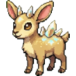

Tap a stage to read its story.
A delicate, cream-and-tan fawn with wide amber eyes and small rock-crystal growths behind its ears that catch the desert light, Teryx picks its way across the sand dunes with light careful hooves that barely leave a print. Tiny feather-like tufts of pale fur sprout from its shoulders and hips, ruffling in the dune wind. It is easily startled but equally quickly curious - a child who stays still long enough will find a Teryx pressing its cold nose to their elbow. The Sand Dunes' guardian texts mention Teryx as the creature who showed the first wanderers the safe paths.
Field note: Teryx always steps in the exact same footprints when retracing a path - its tracks look like one creature crossed a dune, not four.
Sand Dunes. Teryx and its family are found in the Sand Dunes. See everyone who lives there.
Share a Bond Food that matches its types to become friends. Teryx loves:
A Bond Food is not a trick. It joins your spirit with the Kimuro's spirit, and only when it chooses you.
Print the Kimuro adventure packs: mazes, cards, a board game and Bond Mark medals.
See the printable packs